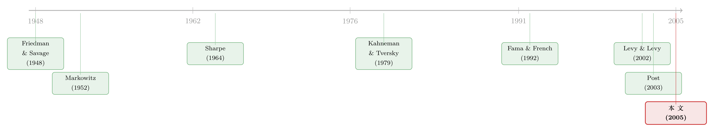

亏时求稳，赚时博大：一张「反 S 形」效用，替市场组合翻了案
本文读的是 Post & Levy (2005, Review of Financial Studies)：他们用允许「局部风险偏好」的随机占优 (stochastic dominance, SD) 准则去检验市场组合到底有没有效率。结论很反直觉——能把规模、价值、动量这些异象一并「招安」的，不是名声在外的前景理论 S 形效用，而是一张被冷落了半个世纪的 反 S 形（Markowitz 型）效用：投资者对亏损区间风险厌恶、对盈利区间却反过来风险偏好。一句话，市场上的大盘股、成长股、过去的输家收益偏低，可能正源于投资者「熊市里求保护、牛市里博上涨」的那份双重心思。
1 一个不肯散去的老问题
先把舞台搭好。资本资产定价模型 (capital asset pricing model, CAPM) 自 Sharpe (1964)、Lintner (1965) 以来，是金融学的第一块基石。它说的事很干净：在均值—方差 (mean–variance) 的世界里，价值加权的市场组合应该落在有效前沿上，没人能既要更高的均值、又要更低的方差。
但这块基石早就被现实啃出了缺口。Fama and French (1992) 发现，按市值 (market capitalization)、账面市值比 (book-to-market equity, BE/ME) 排出来的组合，长期跑赢市场；Jegadeesh and Titman (1993) 又添上一个动量 (momentum)。把权重往小盘股、价值股、过去的赢家上挪一挪，你就能拿到一个均值更高、或者方差更低的组合。换句话说，价值加权的市场组合，看上去严重地均值—方差无效。
于是，一个自然的问题是：错的到底是「市场组合有效」这个结论，还是「均值—方差」这把尺子？
如果不愿意限制收益分布的形状，那么均值—方差 CAPM 要和期望效用理论自洽，效用函数就只能取二次型 (quadratic)。二次效用的毛病人尽皆知——它隐含的边际效用会在某处变成负的（钱越多越不开心），而且只关心前两阶矩。于是人们去抬高效用的阶数：Kraus and Litzenberger (1976)、Harvey and Siddique (2000) 用三次多项式把偏度 (skewness) 请了进来，Dittmar (2002) 干脆用四次多项式，把峰度 (kurtosis) 也算上。数据拟合确实好了一点。
（关于「让风险收编价值与规模、却收不住动量」的这条主线，可参见《会「看天」的 beta：当风险收编了价值与规模，动量却躲进了商业周期》；偏度这条暗线，则见《市场的下一步，藏在一万只股票的「歪斜」里》。）
可是——结果还是不行。市场组合照旧无效，规模、价值、动量效应纹丝不动。
2 三个被忽略的裂缝
为什么抬高效用阶数也救不回来？作者把矛头指向了三处「维持假设」的裂缝。
第一，边际效用递减（全局风险厌恶）。 这些扩展模型，几乎都还死守着「效用处处凹」的设定，也就是投资者全局风险厌恶：他们绝不接受期望为负的赌局（「不公平」的赌局）。可证据偏偏相反。Friedman and Savage (1948)、Markowitz (1952) 早就指出：一个人同时买保险、又买彩票，这意味着他的边际效用在某段区间是递增的——也就是效用函数有凸的一段，他是局部风险偏好 (local risk seeking) 的。心理学家 Kahneman and Tversky (1979) 后来用实验把这件事坐实了。甚至代理问题也指向同一个方向：如果给基金经理的薪酬方案是（局部）凸的——做好了奖励远大于做砸了的惩罚——那么经理在替委托人理财时，就会表现出局部的风险偏好 (Brennan, 1993)。
第二，概率变换 (probability transformation)。 期望效用理论假设人用真实概率。但实验证据说，决策者会主观地变换真实分布：最常见的模式是高估「大涨大跌」这类小概率事件、低估「不温不火」这类中间概率 (Tversky and Kahneman, 1992)。落到投资上，这会催生出对那些只在极端、低频的市场情景里表现优异的资产的「异常」需求。
第三，设定误差 (specification error)。 这是最隐蔽的一处。一旦你要给效用函数、概率分布、变换函数都写出明确的参数形式，经济理论却几乎给不出指引。三次多项式效用隐含投资者只在乎前三阶中心矩——可万一他们在乎峰度、在乎半方差 (semivariance) 呢？更糟的是，低阶多项式连最基本的全局约束都加不上：你没法把二次多项式约束成单调递增（保证不满足），也没法把三次多项式约束成全局凹（保证风险厌恶）(Levy, 1969)。
把这三条连起来看，作者其实在说同一件事：问题不在「阶数不够高」，而在我们一开始就替投资者认定了一个错的形状（处处凹）、还被迫硬塞一个参数化的壳子。 那能不能换一条路——既允许局部风险偏好，又完全不写死任何参数形式？
3 随机占优：只问形状，不问参数
能。这条路就是随机占优 (stochastic dominance, SD)。
SD 的迷人之处在于：它不要求任何参数化设定，只依赖关于偏好和信念的一般性形状假设。更妙的是，它不光在期望效用框架下成立，对许多非期望效用理论也成立——尤其是，它对某些主观概率变换是不变的 (Levy and Wiener, 1998)。
SD 的世界里有一大堆准则，每一个对应一组假设。本文只用三个，差别全在「对边际效用施加什么形状约束」。形式上，作者把一类效用函数写成
$$U(C)=\left\{u\in U_0:\; u'(x)\ge u'(y)\;\;\forall (x,y)\in C\right\},$$
其中 \(U_0=\{u:\,u'(x)\ge 1\;\forall x\in\mathbb{R}\}\) 只是把边际效用标准化到不小于 1（这一步无害，因为 SD 对正仿射变换不变），而集合 \(C\subseteq\mathbb{R}^2\) 才是真正刻画「形状」的那只手。三种形状对应三个准则：
二阶随机占优 (Second-order Stochastic Dominance, SSD)——全局风险厌恶，效用处处凹：
$$C_{SSD}=\left\{(x,y)\in\mathbb{R}^2:\; x\le y\right\}.$$
前景随机占优 (Prospect Stochastic Dominance, PSD; Levy, 1998)——S 形效用，对亏损凸、对盈利凹（即前景理论那条曲线，亏损区间风险偏好、盈利区间风险厌恶）：
$$C_{PSD}=\left\{(x,y)\in\mathbb{R}^2_-:\; x\ge y\right\}\cup\left\{(x,y)\in\mathbb{R}^2_+:\; x\le y\right\}.$$
Markowitz 随机占优 (Markowitz Stochastic Dominance, MSD; Levy and Levy, 2002)——反 S 形效用，对亏损凹、对盈利凸（亏损区间风险厌恶、盈利区间风险偏好）：
$$C_{MSD}=\left\{(x,y)\in\mathbb{R}^2_-:\; x\le y\right\}\cup\left\{(x,y)\in\mathbb{R}^2_+:\; x\ge y\right\}.$$
读到这里要停一下，因为这正是全文的张力所在。PSD 和 MSD 的曲线，恰好是彼此的镜像：前者是「亏了敢赌、赚了求稳」（Kahneman-Tversky 的招牌 S 形），后者是「亏了求稳、赚了敢赌」（Markowitz 1952 提出、却长期无人问津的反 S 形）。两条曲线都允许局部风险偏好，但风险偏好的区间正相反。
这里还藏着一个常被混淆的点：MSD 不等于累积前景理论 (Cumulative Prospect Theory, CPT)。CPT 用的是 S 形效用 + 反 S 形的概率变换。本文证明，MSD 准则对反 S 形的概率变换是不变的；而 Tversky and Kahneman (1992) 估出来的效用曲率很弱、概率变换的曲率很强。于是一个 CPT 决策者通常不会违反 MSD 规则。换句话说，接受 MSD 效率，既可以读成「效用是反 S 形」，也可以读成「概率变换是反 S 形」——后者恰恰是 CPT 的核心。
4 怎么把「形状」变成一道线性规划
形状假设有了，下一步是把它变成能跑数据的检验。这是 Post (2003) 的贡献被推广的地方。
逻辑链条是这样的：如果被检验的组合 \(\tau\)（这里就是价值加权市场组合 \(m\)）对某个 \(u\in U(C)\) 是最优的，那么组合优化的一阶必要条件必须成立——所有资产都得落在切超平面上或其下方：
$$\int u'(x^T\tau)\,(x^T\tau - x_i)\,dG(x)\le 0\qquad \forall i\in I. \tag{13}$$
这个条件的直觉很朴素：从市场组合往任何单个资产方向做边际偏移，都不能提高期望效用。把它换成时间序列样本（\(T\) 期观测，按对 \(\tau\) 的排序记号）的样本等价式：
$$\sum_{t\in Y} u'(x_t^T\tau)\,(x_t^T\tau - x_{it})/T\le 0\qquad \forall i\in I. \tag{14}$$
关键的一步在于：不必去搜遍所有效用函数。注意 (14) 里出现的只有边际效用在各期取值组成的梯度向量 \(b\equiv(u'(x_1^T\tau),\dots,u'(x_T^T\tau))^T\)。形状约束（凹/凸/反 S）无非是对这个向量各分量之间大小排序的约束。于是检验可以写成一道线性规划 (linear programming, LP)：
其中形状约束被打包进多面体
$$B(C)\equiv\left\{b\in[1,\infty)^T:\; b_t\le b_s\;\;\forall\, t,s\in Y:\;(x_t^T\tau,\,x_s^T\tau)\in C\right\}. \tag{16}$$
直觉上，\(B(C)\) 就是把「效用是这个形状」翻译成「边际效用 \(b\) 在各期之间该怎么排序」：在 \(C\) 指定的那些区段里，回报高的那一期，边际效用要更低（凹段）或更高（凸段）。Theorem 2 给出判据：市场组合经验上 \(U(C)\)–SD 有效，当且仅当 \(\xi(\tau,C)=0\)；只要 \(\xi(\tau,C)>0\)，它就无效。
这套检验只含线性目标和有限多个线性约束，桌面 PC、表格软件里的 LP 求解器就能跑——对几百个观测/资产的规模毫无压力。
这里有一处必须诚实交代的不对称。对凹的效用（SSD），一阶条件既必要又充分，\(\xi=0\) 就是全局最优的铁证。可对非凹的 PSD、MSD，一阶条件只必要：满足它的可能只是个局部最优。所以本文的 PSD/MSD 检验是必要条件检验——它有可能把一个其实无效的组合误判成「有效」。作者的补救是：只要假设投资者只能边际地偏离市场组合（比如委托代理约束把代理人的腾挪空间限死了），检验仍然是充分的。这道「只能小步偏离」的假设，是读这篇文章时要一直挂在心上的。
5 数据与那个反转
数据用的是 Fama-French 的价值加权市场组合，以及按规模、BE/ME、动量构造的基准组合；样本区间是 1963 年 7 月到 2001 年 10 月的月度超额收益。一个值得记住的数字：全样本里，市场组合的最低月超额收益是 −23.09%，最高是 +16.05%——区间不算窄，但也都落在 Markowitz「小到中等的盈亏」这一假设大致站得住的范围里（这正是 MSD 与 Markowitz 型效用自洽的前提）。
于是反转出现了。
- 在 SSD（全局风险厌恶） 下，市场组合被判为无效——这与均值—方差 CAPM 的失败一脉相承：只要你坚持投资者处处怕风险，就解释不了为什么大盘股、成长股、过去的输家收益这么低。
- 在 PSD（前景理论 S 形） 下，故事并没有被救活。名气最大的那条曲线，并不是答案。
- 但在 MSD（反 S 形） 下，市场组合无法被拒绝为无效——也就是说，存在一个对亏损风险厌恶、对盈利风险偏好的效用函数（或等价地，一个反 S 形的概率变换），能让价值加权市场组合成为最优选择。
把这件事翻译成人话：大盘股、成长股、过去的输家，是那种「在极端坏的市场情景里相对抗跌、又在极端好的情景里有想象空间」的资产。一个亏损区间求稳、盈利区间博大的投资者，会愿意为这种「下有保护、上有潜力」的特性付溢价——于是它们的平均收益偏低。这正对应摘要里那句「投资者在熊市里渴望下行保护、在牛市里渴望上行潜力」的双重心思。
（这份「保险 + 彩票」的双重心思，和《赌博的四季：当一个「够不着的目标」，同时教你买彩票和买保险》讲的是同一种人性；而「为什么有人甘愿不分散、专挑有彩票特征的资产」，见《为什么有人甘愿「不分散」？——把彩票心理写进资产定价》。）
6 文献脉络
把这条线索拉直来看，它其实是两股河流的交汇。
一股是偏好的形状。源头是 Friedman and Savage (1948)——同一个人为何既买保险又买彩票，逼出了「边际效用局部递增」的设想。紧接着 Markowitz (1952) 在《财富的效用》里画出了那条反 S 形曲线，却在随后几十年被均值—方差框架的光芒盖住、无人深究。直到 Kahneman and Tversky (1979) 的前景理论把「局部风险偏好」做成实验科学，再到 Tversky and Kahneman (1992) 的累积前景理论引入概率变换，行为这一支才真正壮大。
另一股是检验的工具。CAPM（Sharpe, 1964）立柱，Fama and French (1992) 砸出缺口，随机占优理论（Levy, 1998 集其大成）提供了「不写参数、只问形状」的语言，而 Levy and Levy (2002) 正式把反 S 形效用铸成 MSD 准则。真正让这套语言能跑实证的，是 Post (2003) 把 SSD 效率检验化成线性规划。

本文 (Post and Levy, 2005) 站的，正是这两股河流的汇合处：它把 Post (2003) 的 LP 检验从凹效用推广到一般 SD 效率（凹、凸—凹、凹—凸三类），再用它去问一个半个世纪悬而未决的问题——到底是哪一种形状的偏好，能让市场组合活下来。答案，落在了 Markowitz 1952 年那条被冷落的曲线上。
7 评论与延伸（Q&A + 研究方向）
(a) 几个可能的疑问
Q：MSD（反 S 形）和前景理论的 S 形，到底差在哪？为什么差这一点就翻了案？
差在风险偏好出现的区间。前景理论（PSD）是「亏损区间风险偏好、盈利区间风险厌恶」；MSD 正好镜像，是「亏损区间风险厌恶、盈利区间风险偏好」。结果是两种人对资产的需求完全不同：MSD 投资者既要下行保护、又要上行彩票，恰好能合理化大盘/成长/输家组合的低收益，而 PSD 不能。这就是为什么名气更小的那条曲线反而赢了。
Q：「检验市场组合效率」这件事本身有意义吗？毕竟在非凹效用下，个体有效不蕴含市场有效。
这是作者自己点破的软肋。Dybvig and Ross (1982) 证明 SSD 有效集一般不是凸的，所以即便人人都持有效组合，作为加权平均的市场组合也未必有效；PSD、MSD 同样如此。作者的辩护是「显示性偏好」：现实里大量资金通过被动指数基金、ETF 去追踪价值加权指数，这本身就揭示了一种对市场组合的偏好——那么问，什么样的效用能把这种选择合理化，就仍然有意义。
Q：PSD/MSD 检验只是「必要条件」，会不会把无效的组合误判成有效？
会，这是诚实的局限。对非凹效用，一阶条件只必要不充分，满足它的可能只是局部最优。作者的补丁是「投资者只能边际偏离市场组合」——若委托代理约束把代理人的腾挪空间锁死，检验就重新变得充分。这道假设可信与否，因人而异。
Q：那「概率变换」和「效用形状」到底是哪一个在起作用？这不就分不清了吗？
分不清，而且作者明说这是一个关于偏好与信念的联合假设。接受 MSD 效率，既可能因为效用是反 S 形，也可能因为概率变换是反 S 形。妙处在于：反 S 形的概率变换正是 CPT 的核心，且 Tversky-Kahneman 估计里概率变换的曲率远强于效用曲率，所以一个 CPT 决策者通常不违反 MSD。这反而让结论更稳——两条解释都指向同一个观测。
Q：为什么不直接用三次、四次多项式效用，非要绕道随机占优？
因为多项式有「设定误差」和「无法施加全局约束」两个硬伤：三次效用只看前三阶矩，关心半方差、峰度就失灵；而且你没法把三次多项式约束成全局凹来保证风险厌恶。SD 不写参数、只施加形状约束，正好绕开这两处陷阱——代价是它给的是「能/不能被拒绝」的定性结论，而非一个漂亮的点估计。
Q：把参考点设在零（用超额收益），会不会影响结论？
作者做了稳健性检查：把名义参考点降到零、或抬高到市场组合的平均收益，结论都没有显著变化。若参考点未知，还可以把它当成额外的模型变量估计（代价是可能损失检验势）。
(b) 几个可能的研究问题与提案
1. 把反 S 形偏好搬进公司债横截面。 【经济故事】股市里「下有保护、上有彩票」的资产收益偏低；公司债天生是「上行被票息封顶、下行是违约尾部」的非对称资产，几乎是反 S 形偏好的天然试验台。高收益债的「彩票」属性、投资级债的「保护」属性，会不会正好被 MSD 准则刻画？ 【可行性】中。数据用 TRACE + Mergent FISD 构造按评级/久期/利差排序的基准组合即可，LP 检验现成。难点在于债券月度收益的偏态极强、参考点设定更敏感，需要谨慎处理。
2. 外资持有人是不是「形状」更极端的一群？ 【经济故事】若代理与薪酬凸性是局部风险偏好的来源之一 (Brennan, 1993)，那么不同投资者群体的「效用形状」应当不同。外资机构常被认为更追逐动量、更偏好流动性好的大盘股——他们的隐含偏好会不会比本土投资者更靠近反 S 形？ 【可行性】中偏低。需要分投资者类型的持仓面板（如 13F、各国托管数据），把「市场组合」替换成各群体的实际加权持仓再跑 SD 检验。识别上要把「偏好形状」和「信息/约束」分开，并不容易。
3. 反 S 形偏好与流动性溢价的交互。 【经济故事】「下行保护」在危机里最值钱，而危机恰是流动性枯竭之时。投资者对反 S 形资产的溢价，会不会在流动性紧张的状态里被进一步放大？这能把行为偏好和流动性两条线索接起来。 【可行性】中。可借鉴本文的「按状态分子样本」思路（作者自己提到可用聚类按无风险利率、期限利差、信用利差切样本），在不同流动性状态下分别跑 MSD 检验，比较 \(\xi\) 的变化。挑战是子样本变短后检验势下降。
4. 用期权隐含分布替代历史 EDF。 【经济故事】本文用经验分布函数 (EDF) 近似真实分布，隐含「时序无关、独立同分布」的强假设。可期权价格里藏着市场的前瞻性主观分布——把 EDF 换成期权隐含的风险中性（再做风险调整）分布，SD 检验会不会得出不同的形状结论？ 【可行性】中。隐含分布的提取技术成熟，但把它接进 SD 检验需要解决风险中性到客观测度的转换，理论上不平凡。这条路与《为什么从期权里「读」出来的风险厌恶，会咧嘴一笑？》所揭示的「隐含风险厌恶存在风险偏好段」高度呼应——那篇的经验现象，正可作为本文反 S 形结论的一个独立旁证。
我的判断
这篇文章的贡献在方法，也在观念。方法上，它把 Post (2003) 的 LP 效率检验从凹效用推广到一般形状，给「允许局部风险偏好」的资产定价检验提供了一件不必写参数、计算又轻便的趁手工具；观念上，它把 Markowitz 1952 年那条被遗忘的反 S 形曲线重新摆上台面，并给出一个干净的实证站位：能合理化市场组合的，不是前景理论的 S 形，而是它的镜像。
但我对识别有两点不踏实。其一是那道「投资者只能边际偏离市场组合」的假设——它是把 MSD 的「必要条件」补成「充分条件」的唯一桥梁，可现实里被动资金的同质性是否强到这个程度，文章给的是论证而非证据。其二是「偏好 vs. 信念」的根本不可分：MSD 效率既能读成反 S 形效用，也能读成反 S 形概率变换，文章很坦诚地承认这是个联合假设，但这也意味着它无法单独为「风险偏好驱动价格」这个标题盖章——它只能说「某种反 S 形结构」与数据相容。
我接下来最想看到的，是把这套检验搬到信用市场和分投资者类型的持仓上去：公司债的非对称回报是反 S 形偏好近乎完美的试验台，而把「市场组合」替换成不同群体的真实持仓，才有机会把「形状」从匿名的代表性投资者，落到一个个具体的、可被识别的人身上。
参考文献
Dittmar, R. (2002). Nonlinear Pricing Kernels, Kurtosis Preference, and Evidence from the Cross-Section of Equity Returns. Journal of Finance 57, 369–403.
Dybvig, P., and S. Ross (1982). Portfolio Efficient Sets. Econometrica 50, 1525–1546.
Fama, E. F., and K. R. French (1992). The Cross-Section of Expected Stock Returns. Journal of Finance 47, 427–465.
Friedman, M., and L. J. Savage (1948). The Utility Analysis of Choices Involving Risk. Journal of Political Economy 56, 279–304.
Harvey, C. R., and A. Siddique (2000). Conditional Skewness in Asset Pricing Tests. Journal of Finance 55, 1263–1295.
Jegadeesh, N., and S. Titman (1993). Returns to Buying Winners and Selling Losers: Implications for Stock Market Efficiency. Journal of Finance 48, 65–91.
Kahneman, D., and A. Tversky (1979). Prospect Theory: An Analysis of Decision Making Under Risk. Econometrica 47, 263–291.
Kraus, A., and R. Litzenberger (1976). Skewness Preference and the Valuation of Risk Assets. Journal of Finance 31, 1085–1100.
Levy, H. (1998). Stochastic Dominance. Kluwer Academic Publishers, Norwell, MA.
Levy, H., and Z. Wiener (1998). Stochastic Dominance and Prospect Dominance with Subjective Weighting Functions. Journal of Risk and Uncertainty 16, 147–163.
Levy, M., and H. Levy (2002). Prospect Theory: Much Ado about Nothing? Management Science 48, 1334–1349.
Lintner, J. (1965). Security Prices, Risk and Maximal Gains from Diversification. Journal of Finance 20, 587–615.
Markowitz, H. M. (1952). The Utility of Wealth. Journal of Political Economy 60, 151–158.
Post, T. (2003). Empirical Tests for Stochastic Dominance Efficiency. Journal of Finance 58, 1905–1932.
Sharpe, W. F. (1964). Capital Asset Prices: A Theory of Market Equilibrium Under Conditions of Risk. Journal of Finance 19, 425–442.
Tversky, A., and D. Kahneman (1992). Advances in Prospect Theory: Cumulative Representation of Uncertainty. Journal of Risk and Uncertainty 5, 297–323.